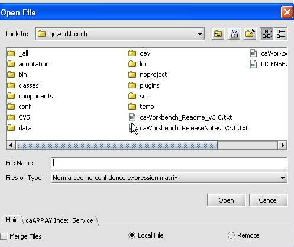
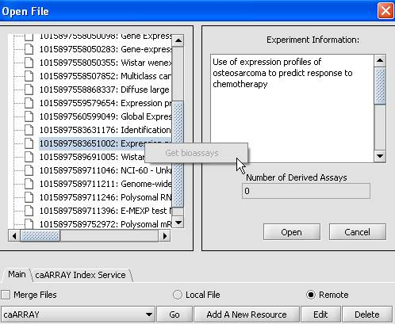

This help section describes opening local and remote files. The remote sources and file types you can access are defined in the configuration settings.
1. Right-click on the project node where the dataset is to be added.
2. Select Open File from the pop-up menu.
。 Note: From the main menu, you can open a dataset stored on a local or remote location, by selecting File -> Open -> File.
3. Confirm that the Local File radio button at the bottom of the window is selected.
4. Choose a file format from the "Files of Type" drop-down and then select the file to load.

1 Select from the available remote options.
2 Click Go.
。 If the remote server is online and accessible, the Open File popup window (see below) will be populated with the list of experiments available at that server.
3 Clicking on an experiment node display the associated experiment information in the corresponding display area. The number of assays included in the experiment is displayed in the Derived Assays field.
4 Right-click on the experiment node, choose Get bioassays.
。 The experiment listing is updated to reflect the number of derived assays as child nodes to the experiment selected.
5 Click on the assay of interest.
6 Click Open.
